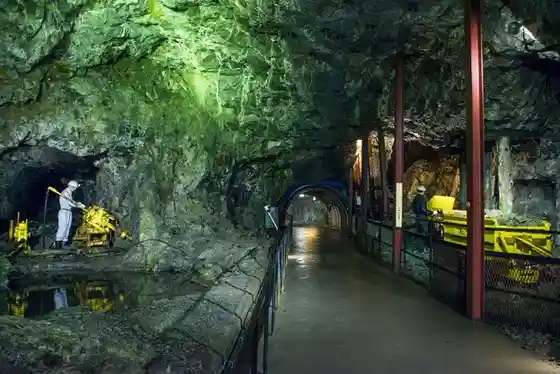
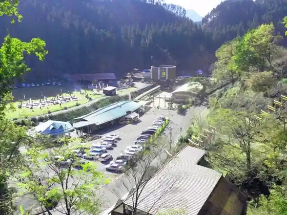
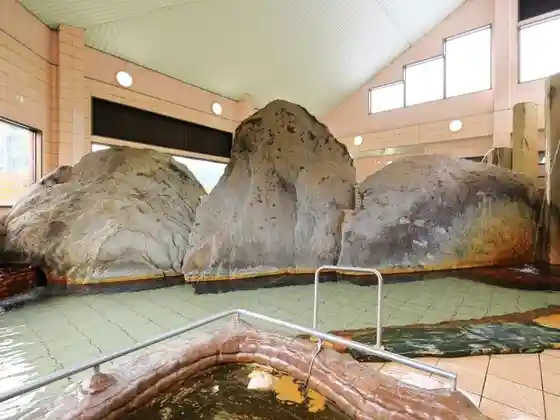

Kangi Sono (Kangien)
Hita, Oita · 0973-22-0268 · Official / source link
Chitei Museum Tai Shokin Yama
Hita, Oita · 0973-56-5316 · Official / source link

Roadside Station Tai Shokin Yama (Taiokinzan)
Hita, Oita · 0973-56-5316 · Official / source link

Gensen Ya (Kyu Yoake Yakuyu Onsen)
Hita, Oita · 0973-27-2809 · Official / source link

Otoporisuintanashonarureshingukosu
Hita, Oita · 0973-55-1111 · Official / source link
Kashibesso Hiiragi
Hita, Oita · 0973-57-9666 · Official / source link
Ukiha Bekkan Shin Shiyo
Hita, Oita · 0973-57-3178 · Official / source link
Aiken to Sugo Su Onsenryokan HONJIN
Hita, Oita · 0973-57-2317 · Official / source link
Ryokan Fukuya
Hita, Oita · 0973-57-2205 · Official / source link
Tengase Onsen Sei Ten Kaku
Hita, Oita · 0973-57-2350 · Official / source link
Sanso Tensui
Hita, Oita · 0973-57-2424 · Official / source link
Showa no Yado Yu no Kaori So
Hita, Oita · 0973-57-2043 · Official / source link
Seoto Yuoto no Yado Ukiha
Hita, Oita · 0973-57-3171 · Official / source link
Ryokan Keisen Kaku
Hita, Oita · 0973-57-2355 · Official / source link
Bara Baths
Hita, Oita · 0973-57-8016 · Official / source link
Ryokan Hitaya
Hita, Oita · 0973-57-2001 · Official / source link
Miharashi no Yado
Hita, Oita · 0973-57-8511 · Official / source link
ryokan Tenryu
Hita, Oita · 0973-57-2370 · Official / source link
Supa Sento Hana Baths
Hita, Oita · 0973-22-9888 · Official / source link
Hito Ume no Yu
Hita, Oita · 0973-52-3355 · Official / source link
Oku Hita Onsen
Hita, Oita · 0973-52-3700 · Official / source link
Ogase Tennen Yu Senraku Onsen
Hita, Oita · 0973-23-8570 · Official / source link
Hatago
Hita, Oita · 0973-26-0022 · Official / source link
Shokyoto Baths Mikuma Hotel
Hita, Oita · 0973-23-3000 · Official / source link
caffel Hina no Sato
Hita, Oita · 0973-22-2134 · Official / source link
Hita Onsen Kameyama Tei Hotel
Hita, Oita · 0973-23-2191 · Official / source link
Ryokan&Sauna Yorozuya Hita
Hita, Oita · 0973-22-3138 · Official / source link
Hana no Ki RIVER TERRACE
Hita, Oita · 0973-24-0811 · Official / source link
Hotel&Restaurant KIZAN Kurabu
Hita, Oita · 0973-28-5230 · Official / source link
Shingeki no Kyojin in HITA Museum
Hita, Oita · 0973-52-3630 · Official / source link
Nihonmaru Kan
Hita, Oita · 0973-23-6101 · Official / source link
Miharashi no Yado
Hita, Oita · 0973-57-8511 · Official / source link
ryokan Tenryu
Hita, Oita · 0973-57-2370 · Official / source link
Senraku Onsen
Hita, Oita · 0973-23-8570 · Official / source link
O Kashi Tsukasa Kyo Tachibana
Hita, Oita · 0973-23-5258 · Official / source link
Toko Do (Tokodo)
Hita, Oita · 0973-22-1141 · Official / source link
Seishu Kaoru Cho Jozomoto
Hita, Oita · 0973-22-3121 · Official / source link
Temari Kobo to Teito Workshop
Hita, Oita · 0973-22-2028 · Official / source link
Kaoru Cho Shuzo
Hita, Oita · 0973-22-3121 · Official / source link
Tsukada Onsen Center
Hita, Oita · 0973-57-2166 · Official / source link
Roadside Station Seseragi Sato Kamitsue
Hita, Oita · 0973-54-3514 · Official / source link
Onta Yaki Village (Ontayaki)
Hita, Oita · 0973-29-2020 · Official / source link
Mameda Town
Hita, Oita · 0973-22-2036 · Official / source link
Roadside Station Suihen no Sato Oyama
Hita, Oita · 0973-52-3630 · Official / source link
Tenryo Hita Yoshu Museum
Hita, Oita · 0973-28-5266 · Official / source link
Sapporobiiru Kyushu Hita Kojo
Hita, Oita · 0973-25-1100 · Official / source link
Jion Falls (Jion no Taki)
Hita, Oita · 0973-72-1313 · Official / source link
Kafebiyori
Hita, Oita · 0973-28-6570 · Official / source link
Sanso Tensui
Hita, Oita · 0973-57-2424 · Official / source link
Unagi Sagi Tei Rotir
Hita, Oita · 0973-28-6088 · Official / source link
Roreru Hita Kantorii Club
Hita, Oita · 0973-22-4111 · Official / source link
Tenryo Hita Museum
Hita, Oita · 0973-24-6517 · Official / source link
Hita Gion Yamaboko Hall
Hita, Oita · 0973-24-6453 · Official / source link
Umeshu Kura Oyama
Hita, Oita · 0973-52-3004 · Official / source link
Iichiko Hita Joryujo
Hita, Oita · 0973-25-5600 · Official / source link
Hita Ayu Yana Ba Chaya
Hita, Oita · 0973-24-0420 · Official / source link
Hita no Unagi
Hita, Oita · 0973-22-2036 · Official / source link
Inoe Shuzo
Hita, Oita · 0973-28-2211 · Official / source link
Sakura Taki
Hita, Oita · 0973-57-2166 · Official / source link
Hita Yakisoba no Meiten
Hita, Oita · 0973-22-2036 · Official / source link
Foresutoadobencha Oku Hita
Hita, Oita · 080-8360-6789 · Official / source link
Oyama Damu Karyu Plaza (Shingeki no Kyojin Eren Mikasa Arumin no Shonen Ki no Dozo)
Hita, Oita · Official / source link
Sanso Tensui
Hita, Oita · 0973-57-2424 · Official / source link
Kon Hira Onsen Yume Sansui
Hita, Oita · 0973-23-8827 · Official / source link
Oku Hita Onsen Umehibiki
Hita, Oita · 0973-52-3700 · Official / source link
Hara Jirozaemon no Misoshoyu Kura
Hita, Oita · 0973-23-4145 · Official / source link
Sho Zen (Shozen) Baths
Hita, Oita · 0973-26-7088 · Official / source link
Hita Amagase Town Bara Baths
Hita, Oita · 0973-57-8016 · Official / source link
Amagase Kei no Ie
Hita, Oita · 0973-57-3793 · Official / source link
Megumi Baths
Hita, Oita · 0973-57-3512 · Official / source link
Takatsuka Atago Jizo Mikoto (Takatsukatagojizoson)
Hita, Oita · 0120-417-381 · Official / source link
Keirin So Park
Hita, Oita · 0973-22-2036 · Official / source link
Rekishi no Komichi
Hita, Oita · 0973-22-2036 · Official / source link
Mikuma Kawa (Mikumagawa)
Hita, Oita · 0973-22-2036 · Official / source link
Hita Tourist Information
Hita, Oita · 0973-22-2036 · Official / source link
Hirose Museum
Hita, Oita · 0973-22-6171 · Official / source link
Kusano Honke
Hita, Oita · 0973-24-4110 · Official / source link
Akashi (Akashi) Hita Yokan Honpo
Hita, Oita · 0973-22-2240 · Official / source link
Omae Gaku (Gozendake) Yusui
Hita, Oita · 0973-53-2111 · Official / source link
Kameyama (Kizan) Park
Hita, Oita · 0973-22-8217 · Official / source link
Chosei Sono (Choseien)
Hita, Oita · 0973-22-2036 · Official / source link
Hita Yakusho
Hita, Oita · 0973-23-3111 · Official / source link